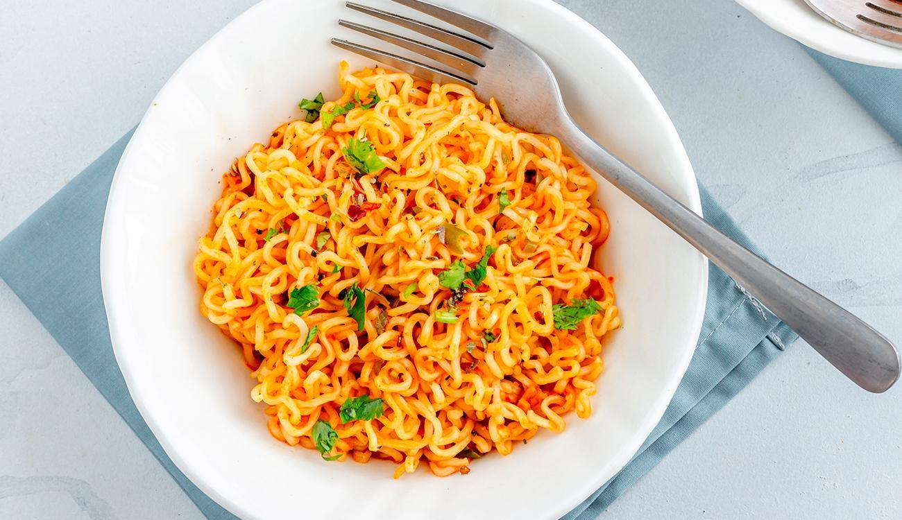

Miojo
Diferente
INGREDIENTES
- 4 xícaras de água
- 2 pacotes de nissin miojo de qualquer sabor
- 1 e 1/2 colher de margarina
- 1 tablete de caldo de galinha (ou outro de sua preferência)
- 1 colher de requeijão
Modo de Preparo
- Coloque a água para ferver.
- Quando estiver fervendo, acrecente o nissin miojo.
- Ao término de 3 minutos, retire o nissin miojo e escorra como macarrão normal.
- Coloque a margarina no fogo, junto com o tablete de caldo de galinha e um pouquinho de água, só
para
ajudar o tablete a dissolver.
- Coloque o nissin miojo e misture bem.
- Coloque o requeijão e misture.
